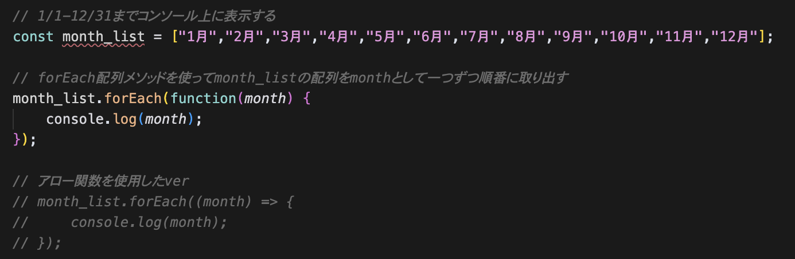
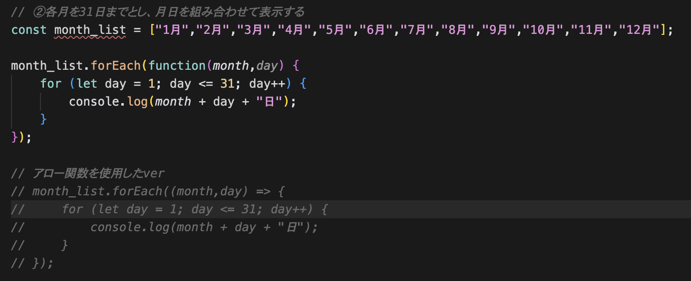
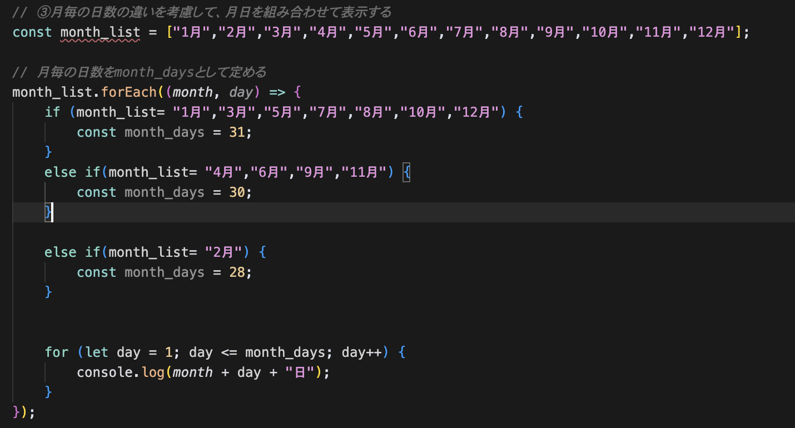

①1月1日から12月31日までの日付をforループを使わずに表示する
配列メソッドforEachを使うことでシンプルなコードを書くことができた

②各月を31日までと仮定し、月日を組み合わせて表示する
配列メソッドforEachの中に1-31日までのforループを入れることで、月日を組み合わせて表示することができた

③ifを用いて月毎の日数の違いを考慮して表示する
if文を用いることで、月毎の日数の違いを変数定義した

④date-fnsライブラリを使用して同じ内容を表示する
ChatGPTのアドバイスでdate-fnsを使ったコードを実装した
- package.jsonを作成してnpm installを実行
- node_modulesとpackage-lock.jsonが生成された
- node_modulesはGitHubにコミットしないよう設定
- format関数で日付表示を実装